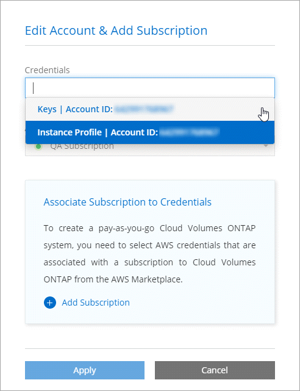
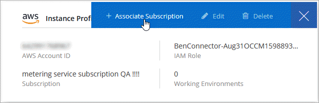

Release notes
Release notes
Managing AWS credentials and subscriptions for Cloud Manager
 Suggest changes
Suggest changes
When you create a Cloud Volumes ONTAP system, you need to select the AWS credentials and subscription to use with that system. If you manage multiple AWS subscriptions, you can assign each one of them to different AWS credentials from the Credentials page.
Before you add AWS credentials to Cloud Manager, you need to provide the required permissions to that account. The permissions enable Cloud Manager to manage resources and processes within that AWS account. How you provide the permissions depends on whether you want to provide Cloud Manager with AWS keys or the ARN of a role in a trusted account.

|
When you deployed a Connector from Cloud Manager, Cloud Manager automatically added AWS credentials for the account in which you deployed the Connector. This initial account is not added if you manually installed the Connector software on an existing system. Learn about AWS credentials and permissions. |
Choices
Granting permissions by providing AWS keys
If you want to provide Cloud Manager with AWS keys for an IAM user, then you need to grant the required permissions to that user. The Cloud Manager IAM policy defines the AWS actions and resources that Cloud Manager is allowed to use.
-
Download the Cloud Manager IAM policy from the Cloud Manager Policies page.
-
From the IAM console, create your own policy by copying and pasting the text from the Cloud Manager IAM policy.
-
Attach the policy to an IAM role or an IAM user.
The account now has the required permissions. You can now add it to Cloud Manager.
Granting permissions by assuming IAM roles in other accounts
You can set up a trust relationship between the source AWS account in which you deployed the Connector instance and other AWS accounts by using IAM roles. You would then provide Cloud Manager with the ARN of the IAM roles from the trusted accounts.
-
Go to the target account where you want to deploy Cloud Volumes ONTAP and create an IAM role by selecting Another AWS account.
Be sure to do the following:
-
Enter the ID of the account where the Connector instance resides.
-
Attach the Cloud Manager IAM policy, which is available from the Cloud Manager Policies page.

-
-
Go to the source account where the Connector instance resides and select the IAM role that is attached to the instance.
-
Click Attach policies and then click Create policy.
-
Create a policy that includes the "sts:AssumeRole" action and the ARN of the role that you created in the target account.
Example
{ "Version": "2012-10-17", "Statement": { "Effect": "Allow", "Action": "sts:AssumeRole", "Resource": "arn:aws:iam::ACCOUNT-B-ID:role/ACCOUNT-B-ROLENAME" } }
-
The account now has the required permissions. You can now add it to Cloud Manager.
Adding AWS credentials to Cloud Manager
After you provide an AWS account with the required permissions, you can add the credentials for that account to Cloud Manager. This enables you to launch Cloud Volumes ONTAP systems in that account.
-
In the upper right of the Cloud Manager console, click the Settings icon, and select Credentials.
-
Click Add Credentials and select AWS.
-
Provide AWS keys or the ARN of a trusted IAM role.
-
Confirm that the policy requirements have been met and click Continue.
-
Choose the pay-as-you-go subscription that you want to associate with the credentials, or click Add Subscription if you don't have one yet.
To create a pay-as-you-go Cloud Volumes ONTAP system, AWS credentials must be associated with a subscription to Cloud Volumes ONTAP from the AWS Marketplace.
-
Click Add.
You can now switch to a different set of credentials from the Details and Credentials page when creating a new working environment:

Associating an AWS subscription to credentials
After you add your AWS credentials to Cloud Manager, you can associate an AWS Marketplace subscription with those credentials. The subscription enables you to create a pay-as-you-go Cloud Volumes ONTAP system, and to use other NetApp cloud services.
There are two scenarios in which you might associate an AWS Marketplace subscription after you've already added the credentials to Cloud Manager:
-
You didn't associate a subscription when you initially added the credentials to Cloud Manager.
-
You want to replace an existing AWS Marketplace subscription with a new subscription.
You need to create a Connector before you can change Cloud Manager settings. Learn how.
-
In the upper right of the Cloud Manager console, click the Settings icon, and select Credentials.
-
Hover over a set of credentials and click the action menu.
-
From the menu, click Associate Subscription.

-
Select a subscription from the down-down list or click Add Subscription and follow the steps to create a new subscription.